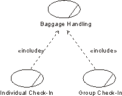

| Рекомендация: Include-Relationship in the Business Use-Case Model |
 |
|
| Связанные элементы |
|---|
ExplanationInclude-relationships are used to partition out parts of a workflow for which the base use case only depends on the result, not the method for reaching the result. You can do this partitioning if it simplifies the understanding of the base use case (detailed behavior is "hidden") or if the partitioned behavior can be reused in other base use cases. For comparison, see also Work Product Guideline: Include-Relationship in the system use-case model. UseOnce you have outlined the workflow of your business use cases, you can look for behavior that is in common for several workflows or that is not necessary to see in detail to understand the primary purpose of a business use case.  The Individual Check-in and Group Check-in business use cases both include the Baggage-Handling business use case. A business use-case instance that follows the description of a base use case will also follow the description of the inclusion use case. The whole workflow described in the included business use case is incorporated. An inclusion business use case of this kind is always abstract, and need not have a relationship with a business actor. Recommended Restrictions in UseYou should reconsider models that have more than one level of include-relationships. Layers of this kind make models hard to understand, even if they are correct in all other aspects. You might even consider hiding inclusion use cases and include-relationships when discussing the model with people who have little or no previous exposure to the use-case modeling technique. |
© Copyright IBM Corp. 1987, 2006. Все права защищены.. |